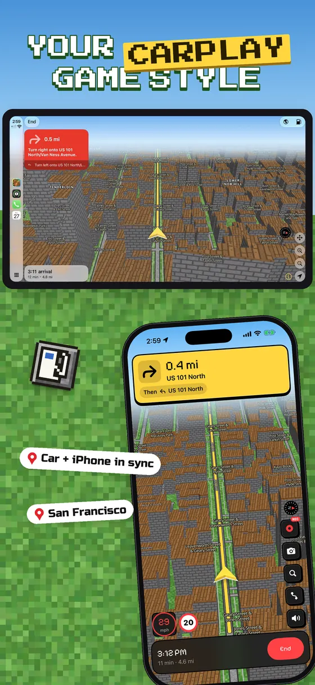
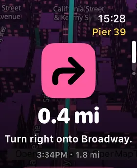

ROAMO 1.0 Hilfe-Center
Wie können wir helfen?
Schritt-für-Schritt-Anleitungen für ROAMO auf iPhone, iPad, CarPlay und Apple Watch sowie Antworten zu Käufen und Datenschutz.
Diese Übersetzung dient nur der Orientierung. Bei Abweichungen gilt die englische Fassung.
In einer Minute startklar
ROAMO ist eine echte Navigations-App mit Abbiegehinweisen. Kein Konto nötig: öffnen und losfahren.
- Standort erlauben, damit ROAMO zeigt, wo du bist, und dich führt.
- Suchen oder sprechen: Adresse oder Ort eingeben, aufs Mikrofon tippen oder eine Kategorie in der Nähe wählen, etwa Tankstelle, Laden oder Café.
- Route ansehen mit Auto, Fahrrad oder zu Fuß und die schnellste mit der kürzesten vergleichen.
- Auf Los tippen. Große Abbiegekarten, dein Tempo neben dem Limit und Sprachansagen bringen dich ans Ziel.
22 Kartenwelten, 2 davon gratis
Tippe auf der Karte auf Welt wechseln und alles wird neu gezeichnet: Boden, Wasser, Straßen, Beschriftungen und die Farbe deiner Route. Block World und Doodle Notebook sind für immer gratis; ROAMO Pro schaltet alle 22 frei.
- Wähle eine Tag- und eine Nachtwelt: Dunkle Welten wie Neon Night leuchten nach Sonnenuntergang.
- Wechsle die Welt mitten in der Fahrt, auf dem iPhone oder in CarPlay.
- Jede Welt kann mit ihrem eigenen Copiloten sprechen. Wähle eine Stimme unter Einstellungen › Copilot-Stimme: Klassisch ist gratis, die Figurenstimmen gibt es mit Pro.


ROAMO in CarPlay
Deine Karte im Spiele-Look, Suche und Abbiegehinweise auf dem Autodisplay, synchron mit deinem iPhone.
- Verbinde das iPhone per Kabel oder kabellos mit dem Auto.
- Tippe im CarPlay-Home-Bildschirm auf ROAMO.
- Suche mit der Tastatur des Autos oder wähle einen letzten oder favorisierten Ort und tippe auf Los.
- Mit der Globus-Taste wechselst du während der Fahrt die Welt, mit Ende beendest du die Navigation.
ROAMO erscheint nicht im Auto? Öffne auf dem iPhone Einstellungen › Allgemein › CarPlay, wähle dein Auto, tippe auf Anpassen und füge ROAMO hinzu.

Auf dem Sperrbildschirm und der Apple Watch
Während der Navigation begleitet dich die nächste Abbiegung auch außerhalb der App.
- Live-Aktivität: nächste Abbiegung und Ankunftszeit auf dem Sperrbildschirm und in der Dynamic Island. Erlaube sie in den iPhone-Einstellungen › ROAMO › Live-Aktivitäten.
- Widgets: Füge ROAMO zum Home-Bildschirm hinzu, um mit einem Tippen nach Hause oder zur Arbeit zu starten.
- Apple Watch: Abbiegekarten, Karte, Zuhause, Arbeit und Favoriten am Handgelenk. Installiere sie über die Watch-App auf dem iPhone unter Verfügbare Apps.
- Siri: Sag „Mit ROAMO nach Hause navigieren“ oder „Mit ROAMO ein Café in der Nähe finden“.




Mach es zu deinem
- World Studio (Pro): Starte mit einer der 22 Welten und ändere Farben, nutze deine Fotos als Texturen und gestalte eigene Orts-Symbole. Tippe auf Welt wechseln und dann auf Erstelle deine eigene Welt.
- Zeiger: Wähle einen Spiele-Zeiger für dein Auto oder mach einen eigenen aus einem Foto.
- App-Symbol: Sechs alternative Symbole schaltest du beim Fahren frei, bei 10, 50, 100, 250, 500 und 1.000 km. Siehe Einstellungen › App-Symbol.
- Welt teilen: Sende die .roamoworld-Datei per AirDrop, Nachrichten oder Dateien. Sie läuft nie über einen Server.


Mach aus Fahrten Videos
Jede navigierte Fahrt kann zur Wiederholung deiner Route in deiner Welt werden, fertig für TikTok, Reels oder Shorts.
- Fahrten werden während der Navigation aufgezeichnet und bleiben auf deinem iPhone. Ausschalten kannst du das unter Einstellungen › Fahrten aufzeichnen.
- Tippe bei Ankunft auf Fahrtvideo erstellen oder öffne später Einstellungen › Fahrten & Videos.
- Wähle ein Format (9:16, 1:1, 4:5 oder 16:9), eine Länge, einen Filter, Titel und Musik.
- Sichere es in Fotos oder teile es. Mit Pro haben Videos kein Wasserzeichen und können deine eigene Musik nutzen.
Du kannst auch einen kurzen Clip der Frontkamera ohne Ton hinzufügen. Er wird nur aufgenommen, wenn du ihn einschaltest, und bleibt auf deinem iPhone.

Häufige Fragen
Wie stelle ich meinen Kauf wieder her?
Wie kündige ich mein Abo?
Was kann ich gratis nutzen?
Warum sehe ich „Tageslimit des Kartendienstes erreicht“?
Wie ändere ich die Sprache?
Wie wechsle ich zwischen Meilen und Kilometern oder schalte die Stimme stumm?
Der blaue Punkt bewegt sich nicht oder zeigt den falschen Ort.
Auf welchen Geräten läuft ROAMO?
Werden meine Fahrten und Videos irgendwo hochgeladen?
Nützliche Links
Kontakt
Schreib an info@deeplyai.app. Gib bitte dein iPhone-Modell, die iOS-Version und eine kurze Beschreibung des Problems an. Wir antworten in der Regel innerhalb von zwei Werktagen.
Die Bildschirmfotos zeigen die englische Version der App.